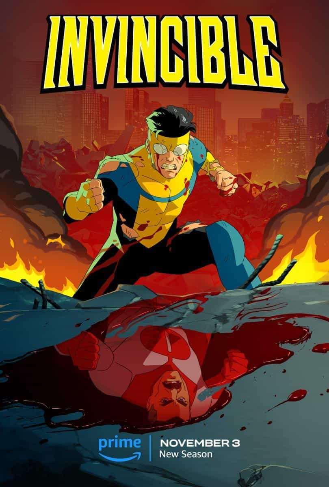

Detalles
Quizás también te guste
TV-14 | 6 temporadas
Drama/Comedia/Crimen
La serie se centrará en Lucifer (Tom Ellis) quien, aburrido e infeliz como el Señor del Infierno, dimite de su trono y abandona su reino para trasladarse a la ciudad de Los Angeles y abrir un lujoso piano-bar llamado Lux. Una vez allí ayudará a la policía a castigar a los más peligrosos criminales de la ciudad.
